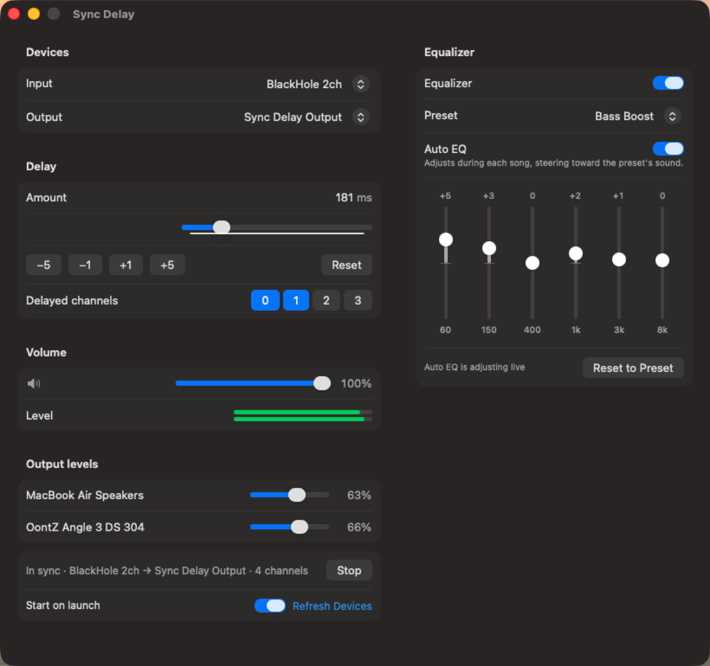

Play your Mac's audio through your MacBook speakers and a Bluetooth speaker at once — without the echo.
Download for Mac How to set it up ›Free and open source · macOS 13 or later

macOS can play to several outputs at once, but a Bluetooth speaker usually arrives 150–300 ms behind your built-in speakers. Sync Delay holds back the faster speakers by exactly that much, so everything lands together.
A small native app that sits quietly in the background.
Slide, type or nudge the delay by 1 ms while music plays, and tune by ear until drum hits line up.
Choose the delayed channels with a click. Changes apply instantly, with no restart.
A master volume and mute, plus a hardware level for every device, so you can balance a loud speaker against a quiet laptop.
Six bands and eight presets, from Bass Boost to Podcast, or dial in your own curve.
Listens to each song as it plays and gently steers it toward the preset you picked. Changes glide in, with no jumps.
New versions show up in the app with one-click install. Settings are always remembered.
Sync Delay uses the free BlackHole driver to receive your Mac's audio.
brew install blackhole-2chFirst launch: Sync Delay isn't notarized by Apple yet, so right-click the app, choose Open, then Open again. You only need to do this once.